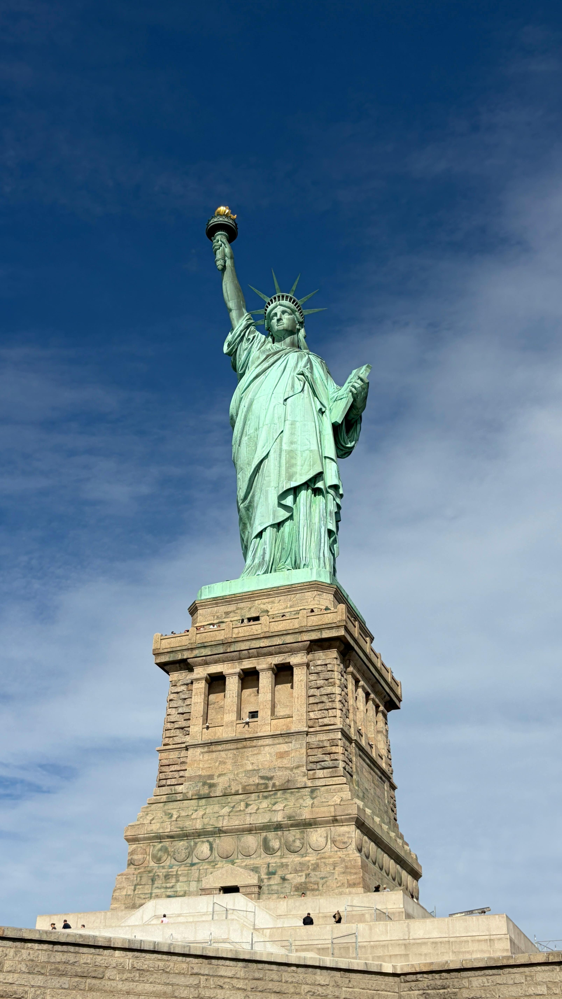

Explore New York City
Statue of Liberty
The Statue of Liberty stands on Liberty Island in New York Harbor and is one of the city’s best-known landmarks. It has welcomed visitors and newcomers to the harbor for generations.

A little background
About the landmark
How it began
The statue was designed by Frédéric Auguste Bartholdi and built in France as a gift from the people of France to the United States. It was dedicated in 1886. Its structure was engineered with the help of Gustave Eiffel.
Today
Today, visitors can take a ferry to Liberty Island, explore the grounds and museum, and learn about the statue’s history and meaning. Access to the pedestal and crown requires separate reservations.
Plan your visit
Directions
Liberty Island, New York, NY